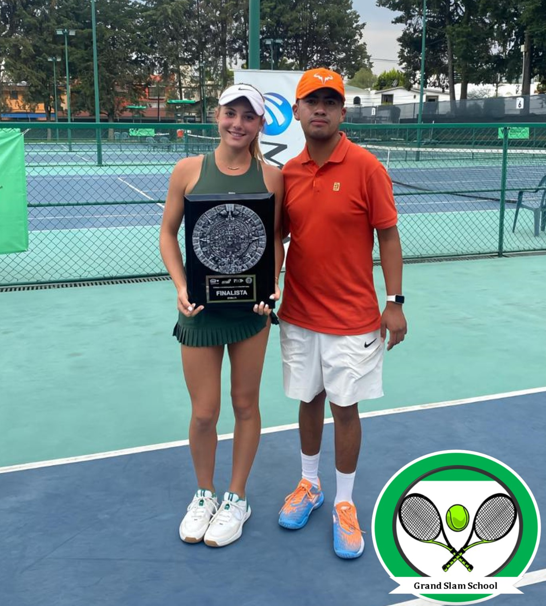
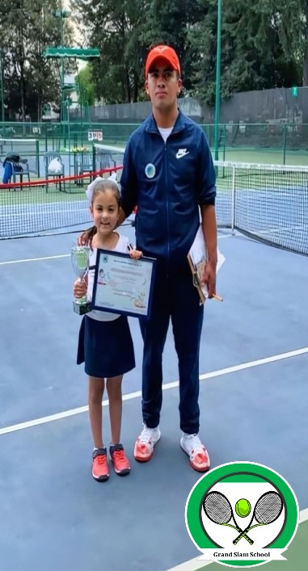
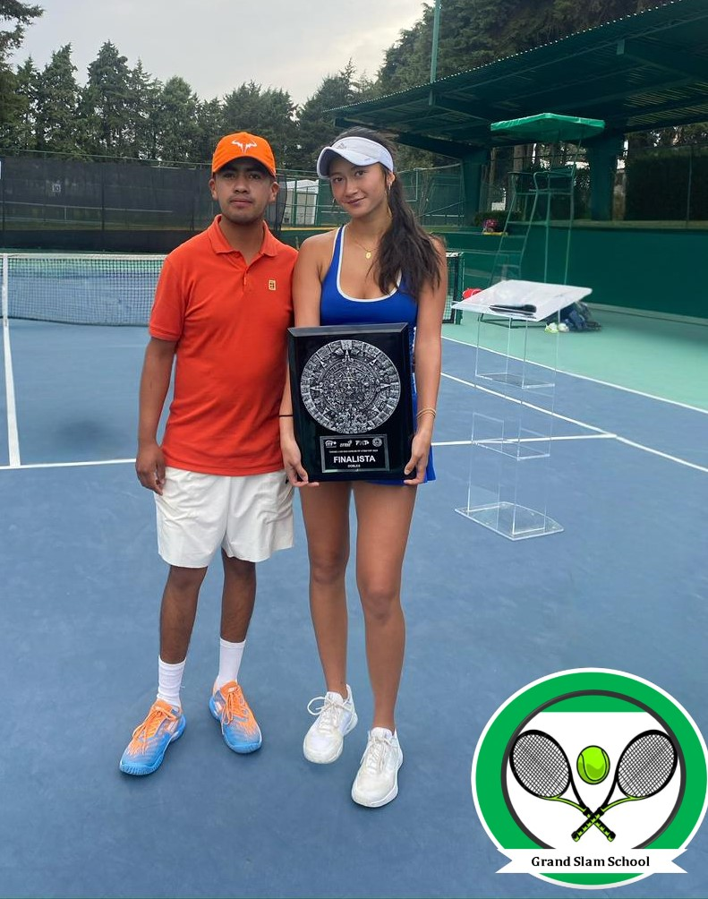
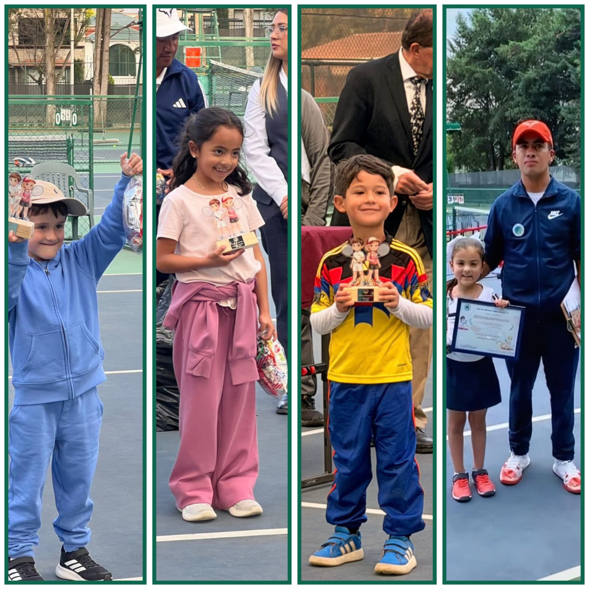

Conócenos
“Grand Slam School”
En Grand Slam School creemos que el tenis es más que un deporte: es una herramienta de formación integral. Nuestro equipo de entrenadores combina experiencia internacional con valores que inspiran disciplina, respeto y superación personal.
Desde programas para niños hasta preparación competitiva, buscamos que cada alumno alcance su máximo potencial en la cancha y en la vida.

Visión
Ser la academia de tenis más estratégica de México, reconocida por formar jugadores capaces de dominar el circuito competitivo mediante sistemas de juego inteligentes, fortaleza mental y análisis táctico. Nuestro objetivo es llevar a cada alumno a competir en todos los clubes del Estado de México, para después escalar al nivel nacional, viajando a distintos estados de la República y alcanzar un lugar destacado en el ranking nacional, abriendo camino hacia nuevas categorías y mayores retos.
Misión
Formamos tenistas con ventaja competitiva y mentalidad de acero. Implementamos sistemas de entrenamiento táctico, preparación mental y dinámicas de diversión que permiten a cada jugador ejecutar estrategias precisas, disfrutar el proceso y competir sin miedo. Iniciamos con torneos locales en el Estado de México para que nuestros alumnos conozcan y dominen diferentes clubes, y posteriormente damos el salto nacional, viajando a distintos estados de la República para obtener un ranking nacional y seguir avanzando en su desarrollo deportivo.
En nuestras sesiones, los niños descubren que el tenis no solo es un deporte, sino una experiencia llena de amistad, disciplina y diversión. Cada entrenamiento es una oportunidad para crecer, y cada sonrisa nos recuerda que el camino hacia el éxito también se disfruta.
